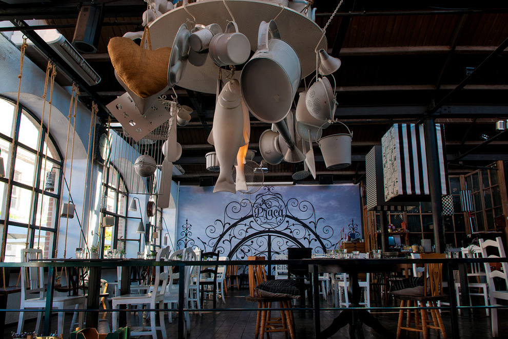
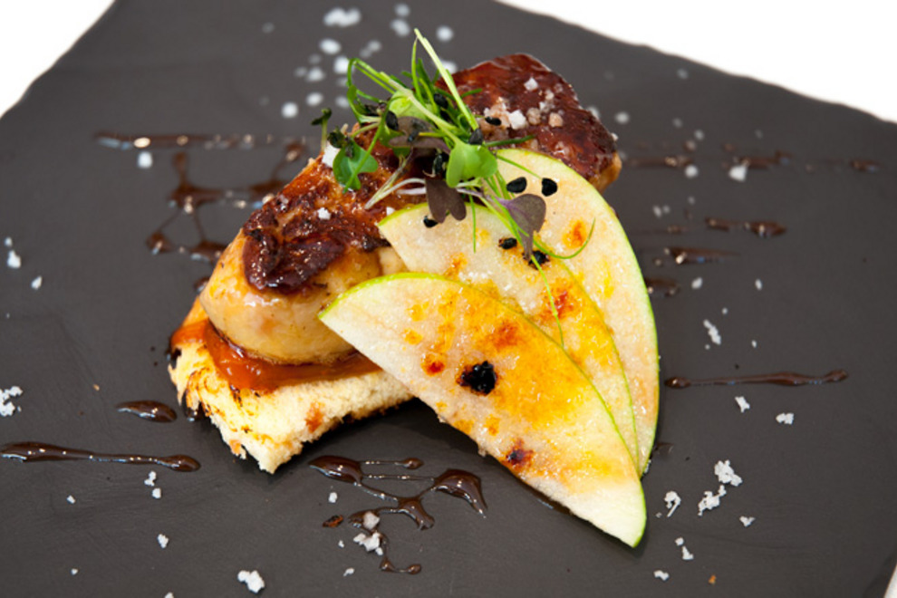
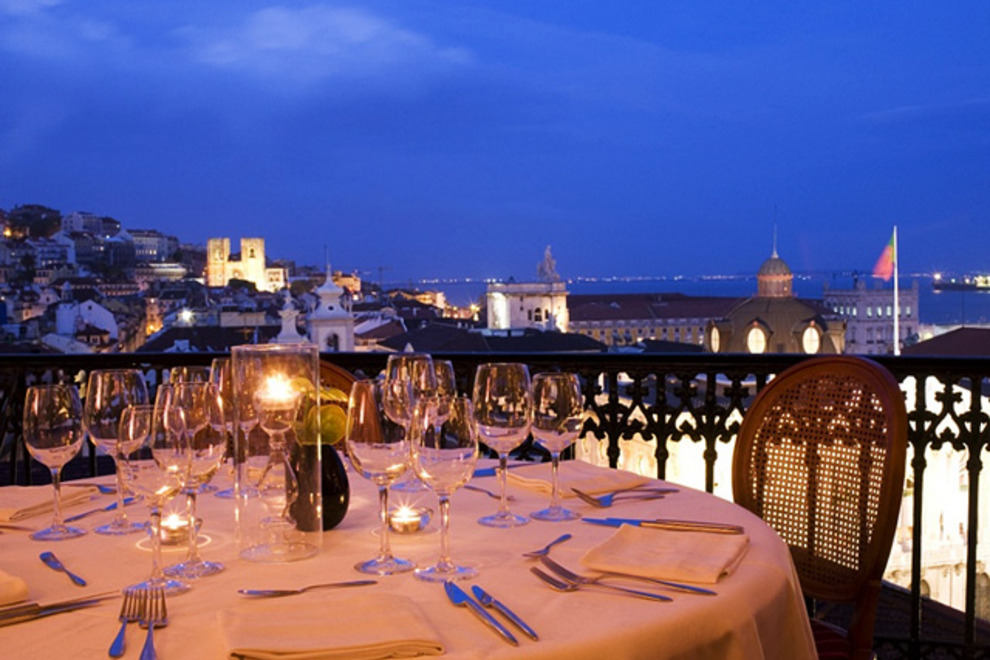
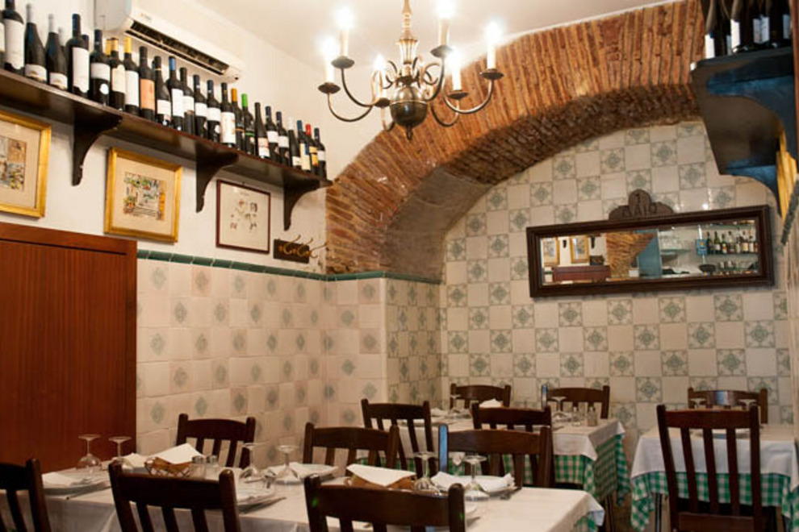
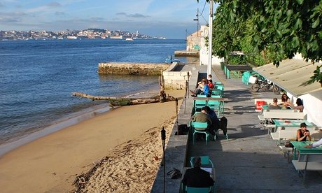

TripAdvisory
Welcome To Lisbon, Portugal
Top Lisbon Restaurants
|  |
A Praça Regularly cited as the coolest restaurant in the LX Factory – a disused manufacturing complex where several former industrial warehouses have been taken over by independent fashion and retail outlets, internet start-ups, architecture and design practices, cafes and eateries – A Praça is celebrated as much for its chic retro-vintage interior design as its Italian pasta and Portuguese pesticos – regional snacks.
Good for: Families with children, Special occasions, Local cuisine, Business meetings, Bar scene, Large groups Address: Lx Factory | LX Factory, 1300-501, Portugal |
|  |
Mesón Andaluz The mouth-watering selection of tapas at this enchanting Spanish restaurant is on par with anything Madrid can rustle up. Tasty appetizers listed include pumpkin soup with curd cheese and wild fruits, garlic prawns bathed in virgin olive oil, and piquillo peppers stuffed with cod.
Good for: Local cuisine, Special occasions, Romantic, Business meetings, Families with children Address: Travessa do Alecrim n0 4 | NEAR CAIS DO SODRÉ |
|  |
Tágide As locations go, classy Michelin-recommended Tágide is hard to beat. Set within an elegant 18th-century townhouse in Lisbon's gilt-edged Chiado quarter, the restaurant commands glorious views across the city's downtown area – an especially alluring site after dark, particularly if you're seated on the terrace.
Good for: Local cuisine, Special occasions, Romantic, Business meetings, Scenic view Address: Largo da Academia Nacional de Belas Artes |
|  |
Antigo de 1 Maio This family-run restaurant prides itself on a menu of home cooked meat and fish dishes based on regional Portuguese cuisine, and this cosy little eatery looks the part with its the tiled walls and original stone-arched ceiling. The menu reflects the country kitchen appearance with dishes like carne do porco alentejana, an intriguing combination of pork and clams bathed in olive oil garnished with coriander, garlic, paprika and sliced lemon.
Good for: Dining on a budget, Families with children, Local cuisine Address: Rua da Atalaia, Lisbon, Portugal |
|  |
Atira-te ao Rio, Cacilhas Lisbon is a city of spectacular views. Numerous miradors, rooftop terraces and historic towers provide panoramas. But if you want to see the whole city stretched out along the river bank you need to cross the Tagus to the south bank.
Good for: Local cuisine, Romantic, Special occasions, Scenic view, Families with children Address: Cais do Ginjal 69-70, Cacilhas |